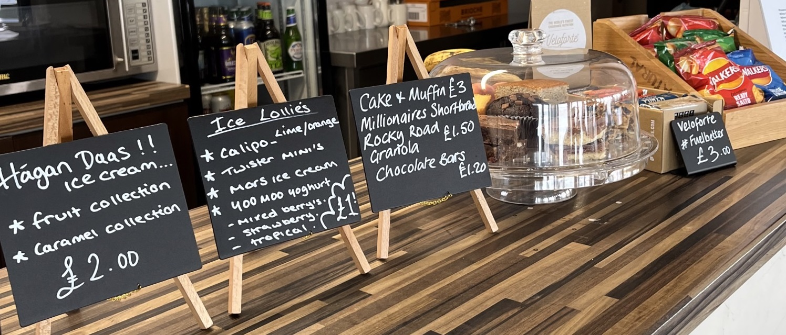

Hello from Claire
We have been with you all now since August 2022 and we couldn’t feel more welcome. Thank you for all the lovely feedback and allowing us to get to know you and understand how best to serve you.
We appreciate that when you are on the water you prefer quicker service so we are now incorporating dishes that are ready to eat as well as snacks.
View the Club Menu and more at www.clairecookssurrey.co.uk
For now, our opening hours during the week are between 9am to 3pm and weekends 9am to 5pm.

We have restarted the Menu for the Kids Club, which have gone down really well. We are seeing more parents staying and eating with us too. If you are thinking of booking please click here for further information.
During the Summer Season we offer a Special Dinner on a Wednesday evening to our club racing members. Over the last few weeks these have gone down really well and members have bought their partners too!
If you are looking for a different setting for working from home, remember QM offers FREE WI-FI so please take advantage and spend the day with us.
We have a new expresso coffee machine from Capital Coffee a London based roasting company. Capital Coffee invests in the latest roasting technology using traditional Italian slow roasting techniques which, combined with computerised controls and their Mark’s (our Master Roaster) produces a range of coffees to suit every taste. We also offer expresso decaf and have alternative Barista Oat Milk which is Gluten Free.
Outside of QMSC we are the catering team for Heron Swim and we also provide a range of event catering services - Hog Roasts, BBQ & Grill, Kitchen to Table and much more, see our website for details.
We hope you are enjoying the new menu and specials we are offering and look forward to seeing you all soon.
From all the Claire Cooks Surrey team